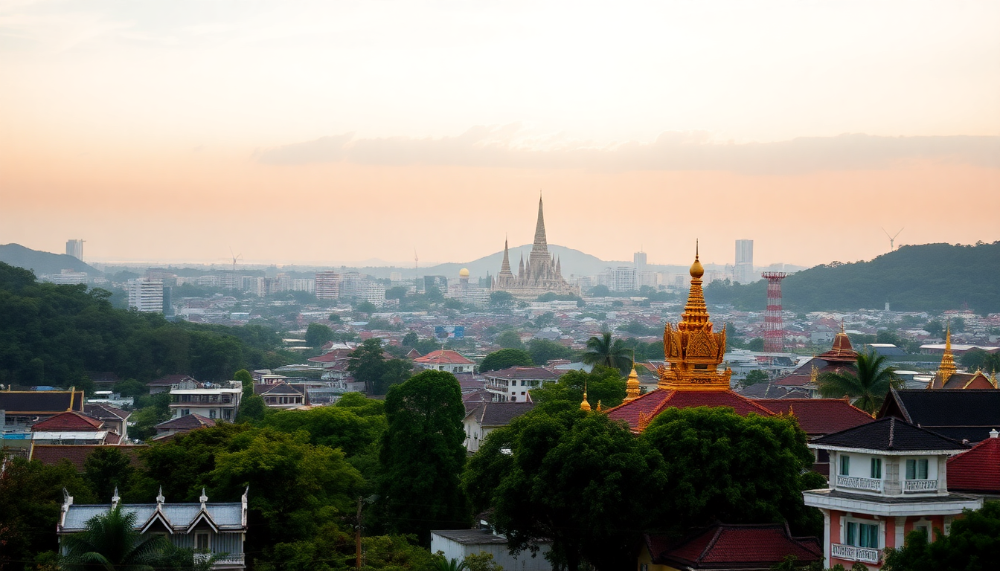

Where to Stay in Bangkok: Best Neighborhoods for Every Budget

I’ve spent weeks crisscrossing Bangkok’s chaotic streets, and the biggest mistake I see travelers make is picking the wrong neighborhood. You don’t want to stay in Silom if you’re after temples, or in Khao San if you need sleep. Here’s the breakdown of where to base yourself, from backpacker alley to riverside luxury — with the real costs and trade-offs.
What’s the best neighborhood for first-time visitors?
For your first trip, Sukhumvit is the safest bet. It’s central, connected by the BTS Skytrain, and packed with everything from street food to speakeasies. I stayed near Nana BTS and could reach the Grand Palace in 20 minutes by taxi, but also had a 7-Eleven on every corner for late-night snacks.
- Sukhumvit Soi 11 — nightlife central, loud but walkable to clubs and rooftop bars
- Thong Lo — upscale, quieter, great for foodies and couples
- Phrom Phong — luxury malls like EmQuartier, plus tree-lined streets
If you want culture without the chaos of Khao San, pick Banglamphu (the Old City). It’s closer to temples and the river, but the nearest BTS is a 20-minute walk. We used river taxis instead — cheap and scenic.
Which neighborhood is best for budget travelers?
Khao San Road is the backpacker hub, but I’d actually recommend staying one street over in Phra Athit or Rambuttri. Same cheap guesthouses, half the noise. We paid 600 baht a night at a guesthouse on Soi Rambuttri and slept fine — no bass thumping until 4 AM.
- Khao San Road — party scene, cheap beer, loud until dawn
- Phra Athit — quieter riverside, cafes, and a Saturday night market
- Banglamphu — budget hostels near the Grand Palace, but no Skytrain
For rock-bottom prices, Siam Square has dorm beds for 300 baht, but you’re surrounded by malls and teenagers. Honestly, you’re better off in Banglamphu for atmosphere.
Where should I stay for luxury and river views?
The Riverside (Charoen Krung area) is where Bangkok’s old-money hotels sit. I spent two nights at Mandarin Oriental (splurge of the trip) and the view of the Chao Phraya at sunset is worth every baht. But you don’t need that budget — Chatrium Riverside offers similar views for a fraction of the price.
- Mandarin Oriental — iconic, old-world service, river-facing pool
- Chatrium Riverside — great value, free shuttle boat to BTS
- The Peninsula — massive rooms, infinity pool, but out of the way
Downside: Riverside is isolated. You’re dependent on taxis or the hotel’s boat shuttle. The nearest BTS (Saphan Taksin) is a 10-minute ride away. Great for a romantic stay, bad for sightseeing efficiency.
What’s the best area for nightlife and socializing?
Silom and Sathorn are Bangkok’s business districts by day, but after dark they transform. Soi Patpong is the famous (and touristy) red-light area, but I prefer Soi Convent for craft beer and live music without the pushy touts. Thong Lo has the classier bars — think speakeasies and rooftop lounges.
- Silom Soi 4 — LGBTQ+ friendly bars and clubs
- Thong Lo Soi 55 — cocktail bars like Rabbit Hole and Tuba
- RCA (Royal City Avenue) — mega-clubs for EDM crowds
If you want to stumble home from a bar, stay in Silom. If you want to dress up and take photos, Thong Lo. Just avoid Patpong unless you enjoy being offered “ping-pong shows” every 10 meters.
Which neighborhood is best for families and long stays?
Sathorn is my pick for families. It’s quieter, has wider sidewalks, and plenty of serviced apartments with kitchens. We stayed at Anantara Sathorn — the two-bedroom suite had a washing machine and a pool that wasn’t packed. Sukhumvit 22 also works, with many family-friendly condos on Airbnb.
- Sathorn — residential, green spaces like Lumpini Park, less traffic
- Ekkamai — international schools, Japanese supermarkets, quiet streets
- Ari — hipster cafes, low-rise buildings, local market on weekends
For long stays, avoid Khao San and Silom. The noise and lack of supermarkets get old fast. Ari is underrated — cheap eats, good coffee, and a BTS station that’s never crowded.
Where should I stay for easy access to airports?
If you have an early flight out of Suvarnabhumi Airport, stay in Sukhumvit near the Airport Rail Link. The Makkasan station connects directly to the airport in 25 minutes. I used Phaya Thai last trip — the station has a direct train, and I found a clean room at Siam @ Siam for under $50.
- Phaya Thai — direct Airport Rail Link, budget to mid-range hotels
- Makkasan — fewer hotels but very close to the rail link
- Sukhumvit 24 — near Asok BTS, easy cab to the expressway
For Don Mueang (domestic/budget airlines), stay in Chatuchak or Mo Chit. The BTS goes there, and it’s a 15-minute taxi to the terminal. Avoid the riverside — you’ll sit in traffic for an hour.
FAQ
Is it safe to walk around Bangkok at night? Yes, in most areas. Sukhumvit, Silom, and Sathorn are well-lit and busy until midnight. Avoid dark alleys in Patpong and beware of scams (tuk-tuk drivers offering “free” rides). I’ve walked Soi 11 at 3 AM without issues, but always keep your phone tucked away.
Should I book a hotel near the BTS or MRT? Always. Bangkok traffic is brutal. If you’re more than a 10-minute walk from a BTS station, you’ll waste hours in taxis. I prioritize the BTS (Skytrain) over the MRT (subway) because it covers more tourist spots. Areas like Siam, Chit Lom, and Asok have both.
What’s the best neighborhood for digital nomads? Ekkamai and Ari. Good coffee shops (try Kaizen Coffee in Ekkamai), coworking spaces, and fast Wi-Fi. Ekkamai is quieter, while Ari has a local feel. Avoid Khao San — too loud and the internet is spotty.
Conclusion
- First-timers should base in Sukhumvit (Thong Lo or Phrom Phong) for convenience and variety.
- Budget travelers get the best value in Banglamphu, just off Khao San.
- Luxury seekers should book the Riverside for views and service, but expect isolation.
- Nightlife lovers belong in Silom or Thong Lo — skip Patpong.
- Families and long-stay visitors will appreciate Sathorn or Ari for space and quiet.
- Airport transit is easiest from Phaya Thai (Suvarnabhumi) or Mo Chit (Don Mueang).